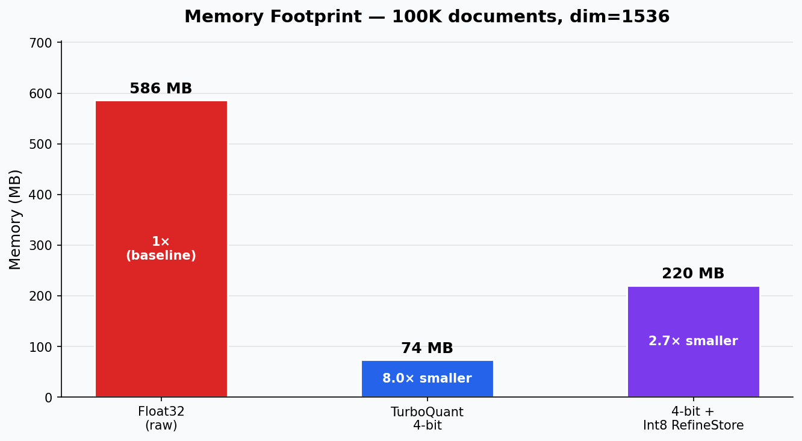
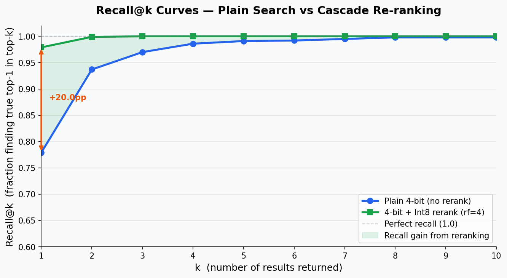
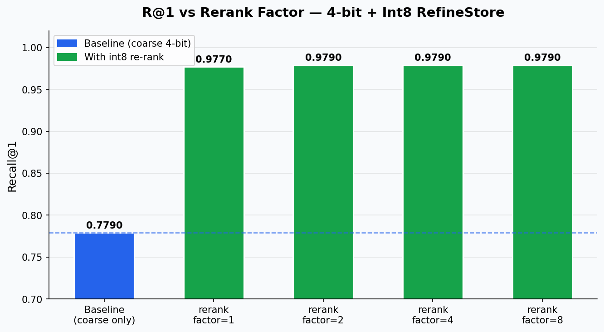
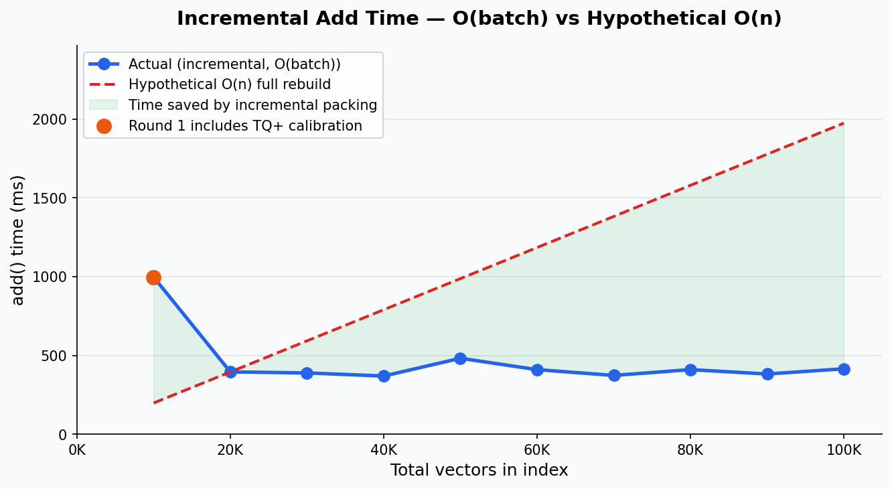
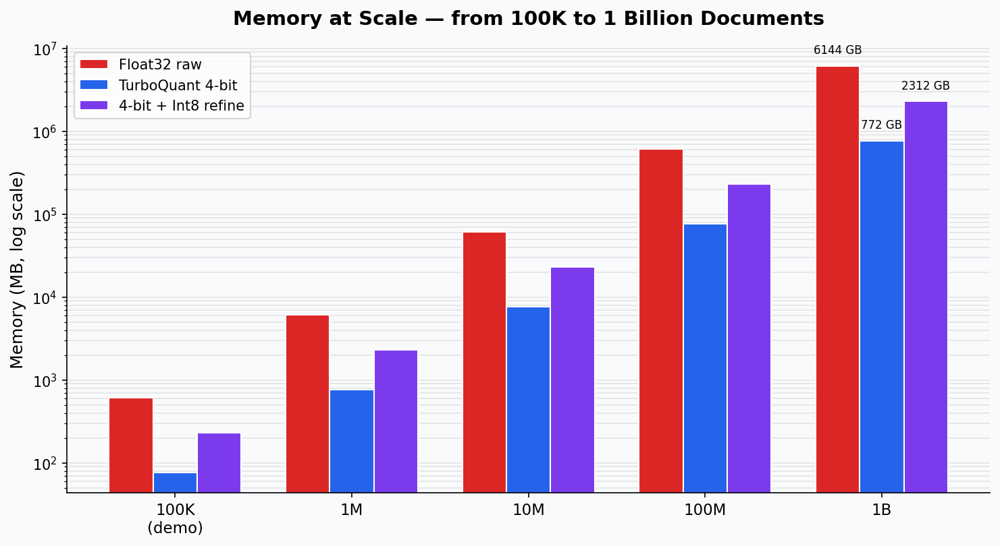
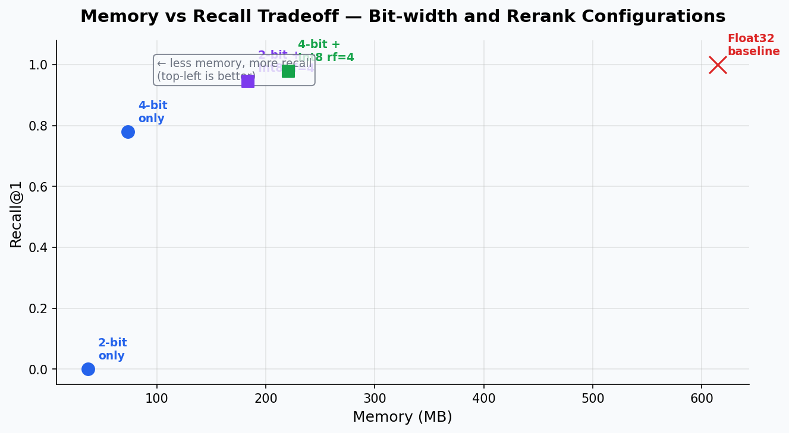

01What this fork adds
Four enhancements on top of upstream turbovec, all live in the demo below.
Half-precision refine store
A new RefineMode::Float16 keeps the exact re-rank vectors at half the size of float32,
yet ~5 decimal digits more faithful than int8. The sweet spot for unit-scaled embeddings.
Cascade re-ranking
A fast coarse 2–4-bit scan shortlists k×factor candidates, then the stored
originals re-score them exactly. Recall@1 climbs from ~0.78 to ~0.98.
Incremental blocked packing
Adds only re-pack the tail 32-vector blocks instead of the whole index — O(batch), not O(n), and byte-identical to a full rebuild so recall is unchanged.
WebAssembly bindings
The core compiles to wasm32 with a sequential fallback (no threads), so the whole
engine runs in the browser. That's what powers this page.
02Live playground
Generate a clustered vector corpus in-browser, build a real turbovec index, and search it. Ground-truth recall is computed by brute force in JS for comparison.
Everything here — quantization, packing, LUT scoring, cascade re-rank — executes inside the
compiled turbovec.wasm. The page only generates the random corpus and computes brute-force
ground truth to score recall.
03Measured benchmarks
From a 100 000-vector, dim-1536 corpus (mimicking OpenAI embeddings). Reproduce with
python3 demo/run_demo.py --charts.






04How it works
Quantize
Each vector is normalized, rotated by a seeded random orthogonal matrix (which forces a data-oblivious Beta distribution), calibrated per-coordinate (TQ+), then quantized to 2–4 bits with a Lloyd-Max optimal codebook and packed into a SIMD-friendly bit-plane layout.
Search
The query is rotated the same way; per-query lookup tables turn the dot product into byte additions the SIMD kernel (AVX2 / AVX-512 / NEON, scalar on wasm) accumulates across 32-vector blocks, feeding a top-k heap.
Re-rank
The coarse scan returns a shortlist; the opt-in refine store (int8 / fp16 / float32) re-scores those exactly and returns the true top-k. This is the two-stage distillation pattern from LLM retrieval.
Grow
Adding vectors only re-packs the tail blocks and appends to the refine store, so incremental indexing stays cheap even at scale.